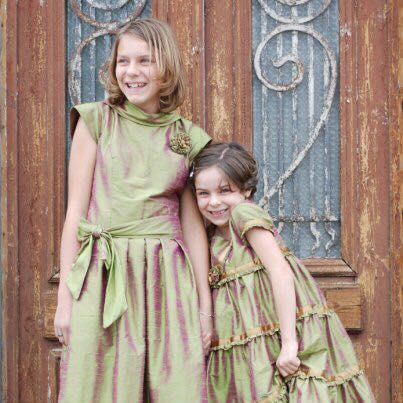
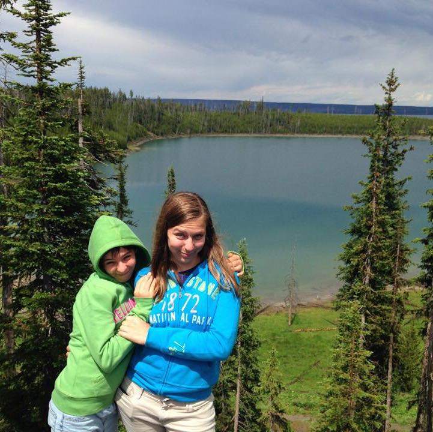
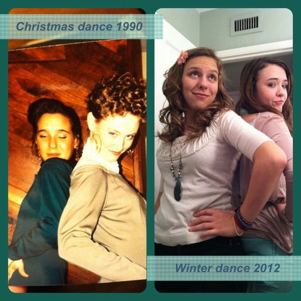
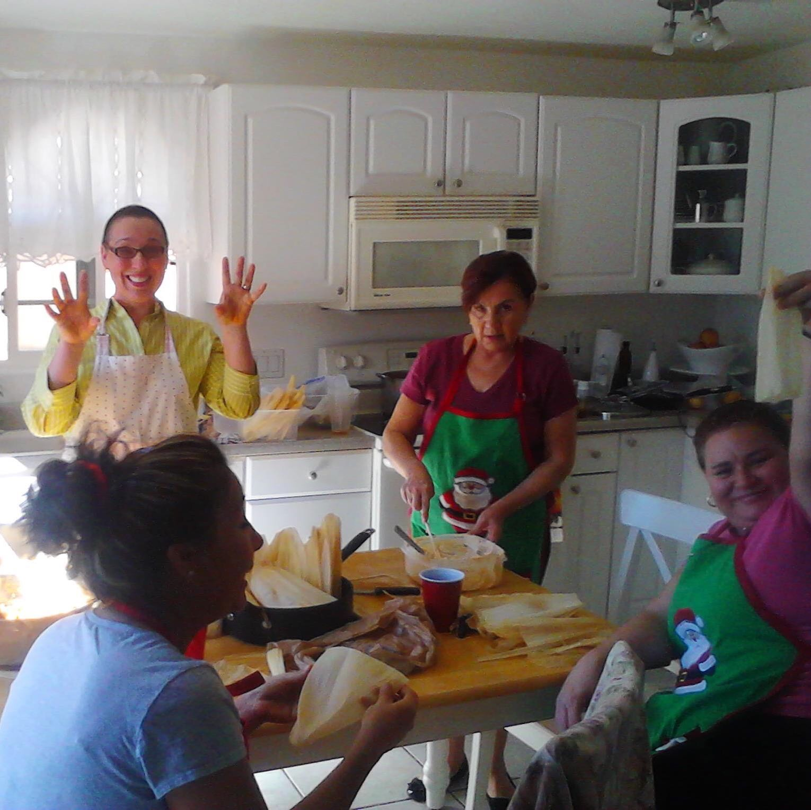

MY FUTURE WIFE
My future wife will be my present wife. We’ve been married almost 21 years and I see no reason to change. Here’re a few of the things I love about her.
-
She loved me at 17-18 when I was lost and confused and didn't love myself.
It was the hardest time of my life and she made it bearable. Even beautiful at times.
-
She likes to not talk for a few minutes after an affecting movie and just let it settle in.
Those silent moments side by side are golden.
-
She is such a clever mom she makes it look effortless.
It is always after the fact that I realize she had been executing a complex year long plan to build independence and confidence and suddenly my 17 year old is comfortable booking a flight, flying alone, catching the shuttle, staying in a hotel alone, and finding her way to the college tour. And then I say, "Oh is this why you did that whole public transit scavenger hunt for her 16th birthday?!" And she smiles knowingly and pats my arm.
-

She's super-creative.
She makes pillow cases for everyone, she made a quilt for our bed, she documents our lives in elaborate scrapbooks that boggle my mind, she makes baby books for friend's babies, she turns glass jars into beautiful center pieces for the school "senior night", she makes a skirt out of neckties, she alters clothes, SHE MADE THESE DRESSES...
-
She is passionate about helping people.
As a stay at home mom she volunteered constantly. Girl Scouts, school gardening and art programs, making meals for home bound people, driving seniors to the doctor… When she went back to work it was right into serving the least-fortunate people in our community. Right now she's in Indiana helping a friend road trip her three small kids to a family reunion in Michigan because the friend's husband died suddenly last fall and the mom wasn't sure she could handle it herself. That's how she is.
-

She loves road trips.
I do not love road trips. But that's ok. She and my girls took a huge multi-week road trip every summer for years and I would join them somewhere for a week or two. She took them all over the country, and in to Canada and Mexico a little bit. So many moms say "aren't you nervous to travel with the kids by yourself". She is gracious in reply and I chuckle. My wife nervous? LOL.
-

She has managed to keep a close open relationship with our 17 year old girl.
Everything I've read says this is a miracle. Isabel talks to her mom about absolutely everything. When the topic is particularly sensitive or potentially embarrassing they talk via texting instead and my wife's a-ok with that. They aren't always happy with each other but they are amazingly close.
-

She's ridiculously organized and effective when it's time to get it done.
We're doing a few minor fixups to our house getting ready to sell. I was prepared to put too much money into it because who had the time to figure it all out? But her internship ended and she came home and *poof* it is almost done, twice as nice as I had hoped, and cost less than half what I was expecting. Because she's meticulous and organized.
-
Most of her friends are old ladies.
I don't know why I love this but I do. Her best friend is Janet, 71. She's got oodles of close friends in their sixties and seventies. She says they are kinder to and more supportive of each other and don't talk about babies and periods all the time.
-
LOOK HOW CUTE SHE IS
With her funny hat.